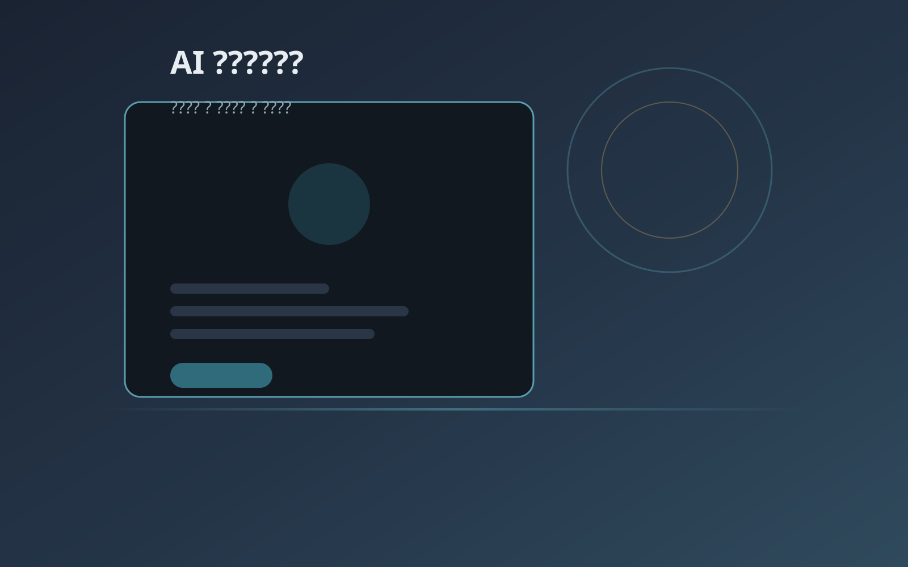
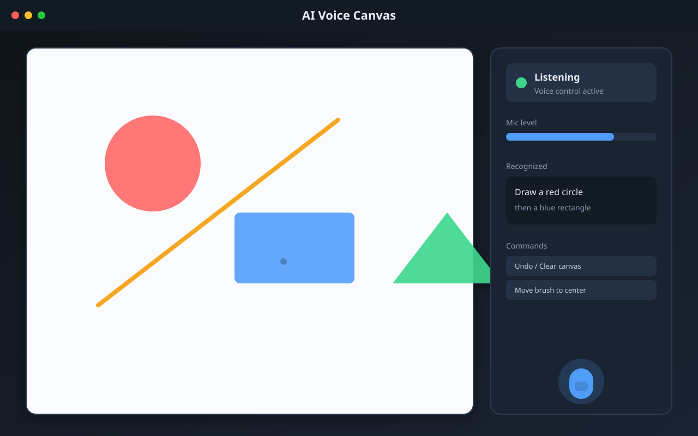
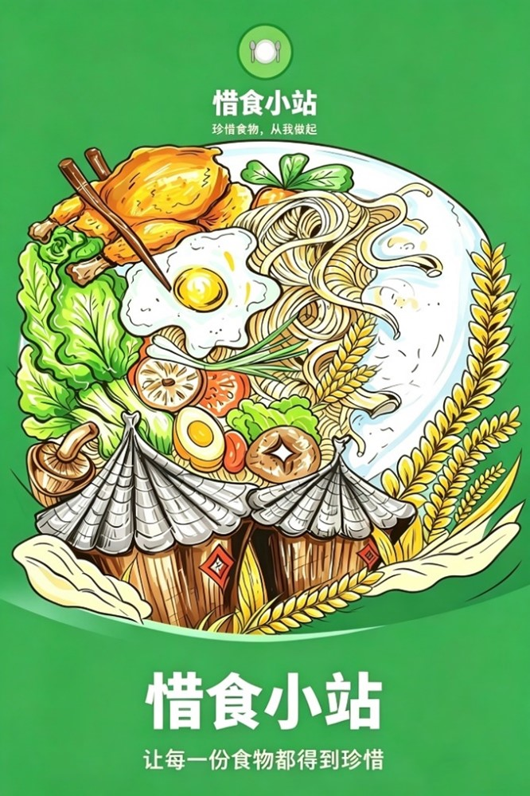
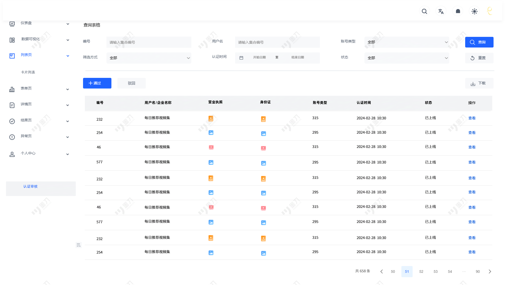
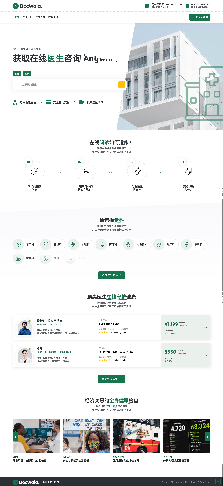
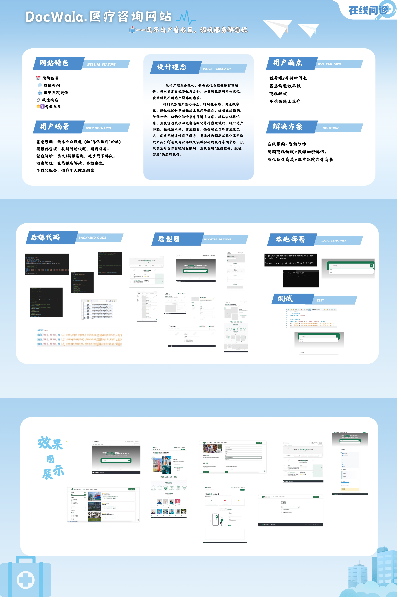
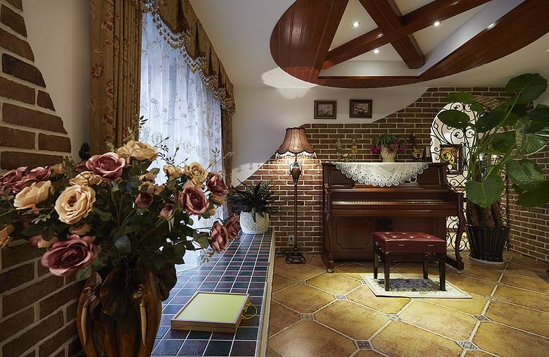
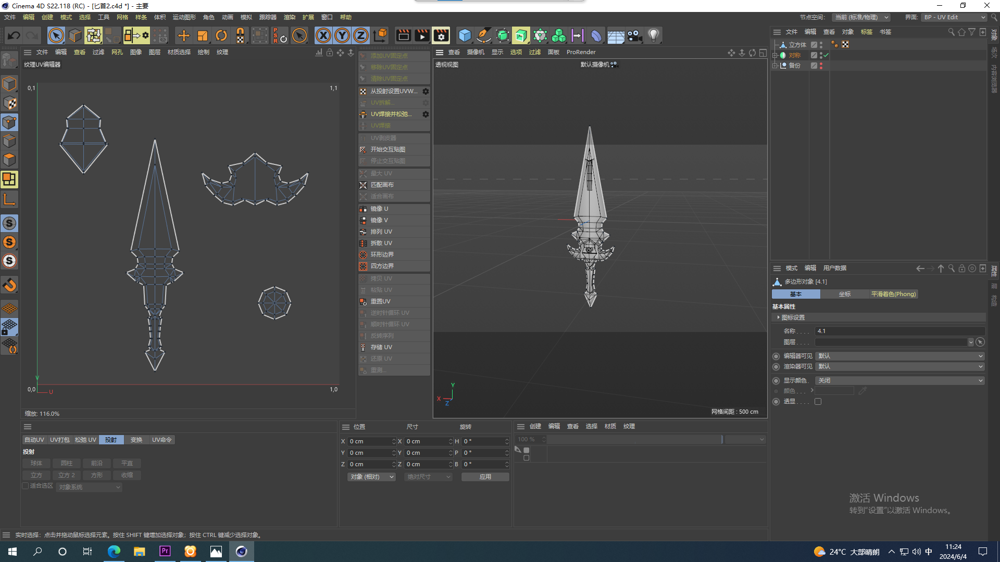
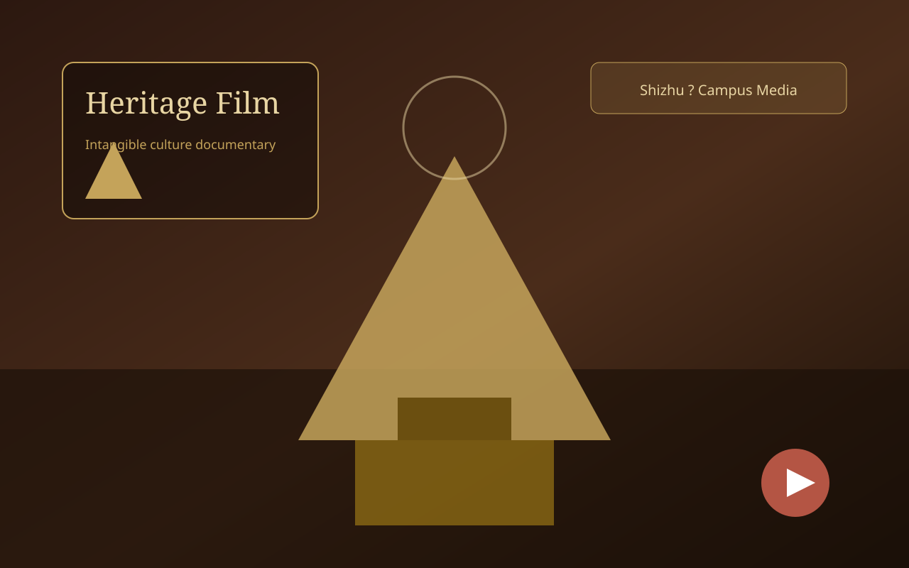

立相 MagicFace
基于 MediaPipe 478 点特征的面相匹配 iOS 应用。支持单人画像、双人适配度、异步邀请与理想型推荐，3D 扫描为可选增强。实习期间参与产品规划与界面设计，推动从概念到可演示版本的交付。
- SwiftUI 客户端 + FastAPI 后端（本地开发）
- 面相适配度对照表算法化 + MeshLab 3D 可视化
2026 届应届毕业生 · 数字媒体技术
能写需求、能画原型、能改代码、能上台路演
我不是只会「协调沟通」的助理型选手，而是真正能交付结果的复合型人才： 实习 3 个月里同时支撑投融资路演、4 款 APP 迭代、品牌体系搭建与多项目并行管理， 获 CEO 与投资人高度评价。既能独立搞定 15 页产品原型，也能用 Cursor 10 分钟闭环体验 Bug。
数字媒体科班出身，却在实习中走出了一条「设计 + 产品 + 商务 + 交付」的复合路径
我是秦艺榕，上海建桥学院数字媒体技术专业 2026 届应届生。 很多人以为数媒专业只会做设计或剪视频——我的差异化在于：能把创意落到业务结果上。
在和光同坤科技实习期间，我同时承担 CEO 助理、产品经理、项目经理三条线的核心工作： 陪 CEO 打投融资局、独立做客户演示、推动 4 款 APP 迭代、搭建公司品牌视觉体系， 还统筹软著申报与多项目进度——不是「打杂」，而是真正参与公司关键事项。
校内，我担任直播经济产业学院班长，完成 137 小时社会实践，主持校招直播、运营佳农/来伊份等品类账号； 课程中独立完成环溯 15 页产品原型、健康食途全套 UI、医疗平台全栈方案。 我关注 AI 与产品结合，能用 Cursor + MCP 把修复周期从「排期数小时」压到10 分钟即时闭环。
在一所注重「产教融合、项目实战」的应用型大学里，把课堂作业做成了真实能用的作品
Shanghai Gench University
上海建桥学院位于上海临港新片区，是上海市规模最大的民办全日制普通本科高校之一。 学校定位应用型大学，2024 年起全面启动向产教融合型大学转型， 提出「入学即入职、毕业即就业、上岗即上手、发展可持续」的人才培养目标。
在 2025 软科中国大学排名中， 建桥位列全国民办高校第 15 名、上海民办高校第一。 2024 届毕业生就业率 99.1%，签约率 90.32%——这所学校的底色是：培养能直接上手的实践者。
隶属于信息技术学院，2013 年首次招生。专业强调技术与艺术融合，聚焦虚拟现实（VR）与交互技术应用，课程涵盖 Web 开发、信息可视化、三维动画、数字合成特效、产品原型设计等方向。
我就读于建桥直播经济产业学院，担任班级班长。在这里完成 137 小时社会实践，以直播主持人身份参与校招宣传、佳农/来伊份等品牌带货，将课堂所学直接应用于真实商业场景。
数据来源：上海建桥学院 2025 年鉴、学校官网公开信息
用数据说话——这些是我最有说服力的能力证明
通过 Cursor 定位并修复 30+ 项 APP 体验 Bug，将传统排期修复从数小时压缩至 10 分钟内完成。
独立主导 1 款 APP 全流程：需求定义 → 界面设计 → 开发交付，2 周内完成并可上线。
环溯 LoopTrace 课题独立完成全套高保真原型，涵盖碳积分商城、智能购物清单、企业红黑榜等模块。
统筹软著申请全流程已获批 2 款 APP；从 0 搭建公司 LOGO、官网与多款 APP 视觉，获投资人正面反馈。
主动介入长期停滞项目，用 MeshLab 模型比对可视化呈现技术能力，获客户认可并恢复实质推进。
京东美妆活动统筹近 50 名兼职、设计 VIP 差异化核销链路，5 分钟应急响应，完整复盘交付品牌方。
设计、产品、开发、商务四条能力线并行——不是「都会一点」，而是能串联成完整交付闭环
Figma / PS / AI / 墨刀 / Xmind
HTML5 / 小程序 / MySQL / Cursor / Flask
PRD / 需求评估 / TestFlight / 用户验证
投融资路演 / 展会拓客 / 软著 / 行政流程
DeepSeek / Cursor / 语义聚类 / 自动化
MeshLab 模型比对 / 可视化呈现
15 个代表项目，覆盖 UI 设计、全栈开发、AI 应用、工具开发、品牌视觉与影像创作
基于 MediaPipe 478 点特征的面相匹配 iOS 应用。支持单人画像、双人适配度、异步邀请与理想型推荐，3D 扫描为可选增强。实习期间参与产品规划与界面设计，推动从概念到可演示版本的交付。

实时计算并展示每秒收入的可爱桌宠应用，支持手机 PWA 与 Electron 桌面悬浮窗。输入月薪或日薪后，在工作时段内每秒弹出收入动画，支持多币种与自定义桌宠形象。

七牛云×XE工程师实训营作品：AI 辅助剧本创作工具，将小说文本自动转换为结构化 YAML 剧本。支持粘贴 / 上传文档、自动分章、流式 AI 转换与三视图编辑（卷轴 / 场景 / 书场）。

实习期间独立发起的 AI 产品验证：打开摄像头与麦克风，让大模型看见画面、听见语音并自然回复。含端云协同成本控制（按需截图、历史裁剪、本地 TTS）。

纯语音控制的 Web 绘图应用，无需鼠标键盘。通过中文指令绘制形状、指定颜色与位置，支持复合指令、撤销与画布清空。

Windows 智能 C 盘清理工具，图形界面 + 命令行双模式。分类扫描临时文件与缓存，安全清理与深度清理分级，深度项二次确认防误删。

面向可持续消费的微信小程序毕设项目。我独立完成 15 页高保真原型、系统功能结构设计，并完成可运行的小程序交付。涵盖环境账单、智能防浪费清单、碳积分商城、企业红黑榜与整改追溯等完整闭环，含用户端 / 管理端演示录屏。

「互联网+」创新创业大赛方向项目。我担任 APP 功能规划与设计负责人，完成从图标、思维导图到全套交互原型的设计交付，构建大众会员 / AI 定制 / 营养师定制三层服务体系。

实习期独立完成的医疗健康服务平台，覆盖10+ 页面：首页、牙痛就医指南、医院列表、注册登录及关于我们 / 帮助 / 捐赠等。先做思维导图规划信息架构，再落地为可交互 Web 页面。

面向上海市医疗资源的预约挂号与咨询平台（团队协作）。我参与可行性分析与调研报告撰写，系统整合二三级医院与 248 家社区卫生服务中心数据，设计症状-科室智能匹配引擎。

Web 应用开发课程小组作业。基于 Flask + Python + MySQL 构建房屋租赁信息管理系统，实现注册登录、房源搜索、数据可视化展示与后台管理，配套 SQL 数据库与演示录屏。
个人品牌 LOGO 及课程视觉作品合集。运用 PS / AI 完成标志设计与多版本迭代（含精修版），风格涵盖简约图形与文创方向，已应用于个人简历、课程答辩与 APP 图标设计。

信息可视化技术课程代表作。以京剧文化为主题，运用 After Effects + Premiere Pro + Illustrator 完成信息图表设计、动态海报与成片剪辑，探索传统文化与现代视觉表达的融合。

三维模型设计与制作课程练习合集。涵盖小球抛物线、游动的鱼、摩天轮、钟摆、路径动画等 14 项三维动力学与变形练习。

专业实训课程代表作。以非物质文化遗产为主题，完成调研报告、剧本撰写与236MB 完整成片，探索传统文化与现代影像表达的融合。
梨园之韵、C4D 三维动画、AE 特效、Web 录屏、惜食小站演示与传媒实训——均已同步至在线视频库，支持精准定位播放。
上海和光同坤科技 · 3 个月身兼三线，每一条都有可量化的交付成果
2026.03 — 2026.06
陪同 CEO 参与多场投融资会议，独立负责演示材料准备与现场产品讲解。会前按投资人背景定制演示重点，会后分类整理提问（产品 / 市场 / 财务），转化为团队可执行跟进项，直接支撑融资推进。
代表公司参加行业展会，独立完成全流程产品演示。成功协助 CEO 对接具备医院合作渠道的客户资源——该客户拥有稳定客流量，为公司开拓医疗场景应用提供潜在合作入口。
从 0 到 1 搭建公司品牌视觉体系：LOGO、官网、多款 APP 宣传物料 + 商业路演 PPT。设计规范被采纳为公司长期标准，直接用于投融资演示与客户提案，获投资人正面反馈。
协助 CEO 团队分工与进度管控，同步跟进 5–10 个项目迭代。独立统筹软著申请全流程（材料撰写 → 审核对接），2 款 APP 已获批，第 3 款申报进行中。
主导多款 APP 体验优化完整链路。通过 Cursor 修复跳转异常、数据刷新失效等问题 30 余项，单问题修复周期从数小时压缩至 10 分钟。另主导 1 款 APP 0→1，2 周完成需求到交付。
建立「用户价值 × 商业影响 × 技术可行性」三维评估模型，梳理 10 余项并行需求并主动砍掉低价值项，确保研发资源持续聚焦关键功能，拒绝「需求堆砌」。
独立发起 AI 产品验证项目，完整实践调研 → 原型 → 内测 → 迭代规划。收集有效用户反馈 30 余条，AI 语义聚类后提炼 3 个核心迭代方向，数天内交付可交互测试版。
搭建跨产品线复用的标准化组件库。主动介入 2 个长期停滞项目，用 MeshLab 高精度模型比对可视化呈现技术方案，客户高度认可，项目恢复实质推进。
统筹多款 APP 迭代与测试交付，同步跟进 5–10 个项目。建立三维度优先级机制（紧急度 / 依赖 / 资源），制定周度执行计划，推动设计、开发、测试按节点交付。
针对交付延迟与需求插队，建立每日同步 + 可视化看板，将「被动等反馈」变「主动曝露阻塞」。优化后团队交付节奏明显改善，需求平均交付周期显著缩短。
独立统筹 AI 验证项目排期，协调设计资源、推动前端搭建与 TestFlight 分发，数天内交付可交互版本并完成真实用户验证，同步推进下一版规划。
陪同 CEO 参展，独立负责演示与客户对接。协助完成 2 款软著申报。实习期间获 CEO 与投资人高度评价，认可专业能力与项目执行力。
实习综合评价：CEO 与投资人高度认可——「专业能力强、执行力突出、可放心交办关键事务」
除了互联网产品，我也有大型线下活动的全流程操盘经验
现场统筹负责人 · 产品运营 · 项目统筹 — 一人三角，全链路负责
面对近 50 名兼职、VIP/普通用户差异化运营、黄牛风控与突发纠纷等多重挑战， 我独立完成从安全审批、人员排班到应急处理与品牌方结算的完整交付闭环。
班长 · 校宣传主持人 · 账号运营
我正在寻找 CEO 助理 / 产品经理 / 项目经理 相关机会。 如果你需要一个「能画图、能写文档、能改 Bug、能上台路演」的复合型应届生—— 我们应该聊聊。
"不只是执行者，更是能独立闭环的交付者。 从 15 页产品原型到 50 人线下活动，从投融资演示台到 Cursor 改 Bug—— 每一件事，都有可见的结果。"
好的助理不是「传话筒」，而是能把意图翻译成方案、并推到终点的人。 设计、文档、代码、路演——每一环都能自己闭环。
— 秦艺榕